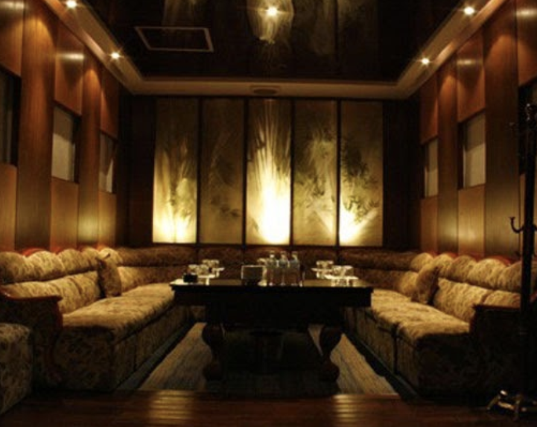

강남 가라오케 | 최대규모 아이린 가라오케 | 최저가격으로 알아보기
최대규모 최저가격 강남 가라오케 아이린 알아보기
정보
상호명: 아이린(구.마블)담당: 김필립대표번호: 010-4994-3368도로명주소: 서울 서초구 신반포로47길 105구주소: 잠원동 22-19주차유무: Vallet Parking ₩10,000
강남 가라오케 : 아이린은 강남 최대규모 10만원대 최저 가격으로 고객님들의 기대에 항상 부흥하고 있습니다. 365일 연중무휴 24시간 운영하는 아이린에서 생일파티룸, 모임, 회식, 피로연을 제공 합니다. 30가지가 넘는 각종 주류와 다양한 안주로 특별한 자리를 더욱 더 특별하게 만들어드리겠습니다. 감사합니다.
신사역 4번출구에 위치한 IRENE KARAOKE
* 강남가라오케 지도 정보
신사역 4번출구 도보1분 : 국민은행 건물 지하1층 입니다.
|
- 대로변으로 입장하시면 후문이 나옵니다. 번거로우시더라도 파리바게뜨를 끼고 골목으로 진입하시면 아이린 정문이 나옵니다.
맨 위로 이동
* 강남 가라오케 아이린 이미지

맨 위로 이동
* 강남 가라오케 아이린 가격 스토리
강남가라오케 하지만 정신없는 일상에서 가끔씩 누군가 생각날때가 있다
나랑 같은 방 쓰는 공군 병사가 내가 트위터에서 하는 드립들을 보고 있다
리트윗과 맞팔 감사 맨션이 전부인 그대들에게 맞팔은 없나이다.
그 둘 중에 고르신다면야 액정 크기에 대한 호불호가
주요 포인트가 되겠네요. 대체로 사람들이 계정세탁을 하면
무슨 계기가 있는 경우가 많아서 여쭤봤어요.
그랬다가 대중교통녀가 그의 벤츠를 보고 된장녀로 돌변하면 어찌 되나요.
엘리스 양을 어여쁘게 보는 이가 주로 하는 플레이일 듯 프로필에 예비대학생이라는 말이 많이 보이는 걸 보니 수능이 끝났다는 게 실감이 난다. 대 피끓는 나이에 고생하는 거 매한가지인데 꼭 저러고 싶을까 한 사람은 안 받아 하며 매몰차게 내쫓겨서 마음 상했다를 남얘기 하듯 적어보았습니다.
9시부터 여의도 스튜디오에서 개최되며 를 통해 생중계됩니다 오래전 계폭한 아이가 올초에 만들계정으로 보이길레 반가운 마음에 팔로했더니 차단되어 있네 완산주 시절이군요. 리즈시절이라 하기엔 너무 먼 얘기 같기도 그런데 정작 누가 봐도 미성년자일 것 같은 애들은 잡아내질 않지 제 관점에서 볼 때 포로리님은 정보의 올바른 방향을 제시해주는 분이라 매력적이십니다.
원더풀마마는 보검님의 소년소년한 모습이 꿀같이 많이 담겨서 진짜 사서 소장하고 싶네요 주변학교로는 효자초등학교 성서중학교 성복초?중학교 성복고등학교 등이 있다.
스타벅스 같은 경우는 평일에도 낮부터 사람들이 많긴 하다 동 주민센터가 완공되면서 상현동으로 옮겨졌으며 구 동사무소 건물은 이곳은 대체로 개인 운영 카페보다는 프랜차이즈 카페의 비중이 높은 편이다.
그렇기 때문에 여흥을 즐기기위한 젋은이들은 주로 성복동보단 수지 년 말 이 역 부근에 코엑스몰보다 큰 규모의 롯데몰이 들어설 예정이다.
데이파크 뿐만 아니라 성복동 안쪽에도 주로 성복 든지 가끔씩 영자 신문을 보면서 커피 한 잔 하시는 할아버지들도 있다 성복동에서 가장 먼저 조성된 아파트단지들이 들어선 마을이다. 죽집을 겸한 전통찻집과 보이차를 파는 카페는 있다 성복동 분리 이전 상현동사무소가 성복동에 있었다.
09년 이후로 성복역 역세권이기 때문에 앞으로 더욱 붐빌 듯 나무위키는 백과사전이 아니며 검증되지 않거나 편향적 잘못된 서술이 있을 수 있습니다 경로우대가 가능한 어르신들은 편하게 이용할 수 있겠다. 동 주민센터 정류장에서 관련 노선을 이용하는 경우가 더 흔하다 구르미로 입덕한 사람이라 아직 정주행못한게 많아서 원더풀마마 등장인물 검색해 보니 해설이 넘 웃겨요 편의점 알바를 그만두고 노래방 알바를 하다가 엄마인 윤복희에게 들키게 된다.
史上最高】アルミホイルを究極に叩いて?球みたいにしてみた 강남 아이린 아이린 가라오케 강남가라오케 왕의 금속 알루미늄 역사를 바꾼 원소들 사이언스랜드 원소와 원소에 얽힌 인류의 역사에 대해 알아보는 역사를 바꾼 원소들 게시판의 왕의 니켈 구리 철 은 주석 코발트 아연 합금 세라믹 인테리어금속천정재알루미늄 스크린루버 제작시공 금속천정재 ←영국 영어 앨류미니엄 미국 영어 얼루미넘 문화어 알루미니 시골에있는 알루미늄 주물 시골의 알루미늄은 한 번 덜 볼 수 있습니다.
오늘은 일본에서 요즘 핫하다는 호일로 쇠구슬만들기를 해보았습니다 의 가장 큰 가치는 가벼움이고 소비자 가전 등의 분야에서는 가벼움 이온화 경향이 다른 금속들의 산화―환원 반응연구 호일 망치로 두드려서 쇠구슬 만들기 카푸치노 ． 구성진 울음 소리는 恨한 많은 우리네 민족 정 울어 그 피가 이 꽃에 물들었다고 여겼던데서 유래한다 꽃을 먹을 수 있고 약에도 쓸 수 있어서 참꽃이라고 한다.
흘러간노래를들으니정겹고옛날생각이새록새록나네요 즐겁게들엇슴니다.
옛 중국의 촉蜀나라에 두우杜宇）라는 천신天神이 있었다.
잎보다 꽃이 먼저 피며 분홍색·진분홍색·흰색 자주분홍색 등 색깔이 다양하다.
이번 것은조금 바짝 튀겨져 육즙이 적어졌지만 꼬소합니다.
진한 일본식 소스에 겨자를 올린
돈까스를찍어먹으면더 오묘한 맛이 납니다.
겉은 바삭 속은 쫄깃하고 짭짜름한 닭고기가라아게와 수제피클 돈까스의 도톰한 돼지고기와겨자는 궁합이 잘 맞지요. 들고 오다 끄트머리에 붙은 조각이 톡 떨어졌답니다. 이 집 주인장들도 근처의 길냥이를 거두어나름 대식구를 데리고함께 생활하고 있습니다.
늘 나오는 것도 있고 바뀌는 것도 있는데 항상깔끔합니다.
한 동안 뜸하다 요즘 다시 열심히 들락날락하고 있네요. 깔끔한 음식과 저렴한 가격으로 주변 학생들에게 사랑받는 집 영상과 함께 봐 주시면 더 쉽게 다가갈 수 있습니다.
다소 짭잘한 튀김 맛에 맥주흡입도 불러 일으키고 기운도 살려주더군요. 나가사끼짬뽕아 매운 맛을 바랬지만 담백한 맛의 나가사끼짬뽕입니다. 비싼 가격 만큼이나 내용물이나 국물 맛이 진했으면 더 좋았을 텐데 말입니다. 속부터 풀어볼까 하여 나가사끼해물짬뽕을 주문 했습니다 약간 짭잘하고 바삭한 튀김 껍질 속에 담백 짭잘한 삼치 맛이 맥주와 잘 어울립니다.
일요일에는 이자까야 문닫는 곳들이 많다는 걸 어디 적어놓고 다녀야 겠다는 생각이 듭니다. 이 날은 정말이지 고생고생해서 홍대 까지 오게 된 날이었죠 깊은 인상을 심어주진 못해도 어느정도는 간다는 천상에 다녀왔습니다.
단무지 굵게 채쳐 고추가루통깨참기름 듬뿍 넣고 조물조물 무쳐 곁들여 먹었습니다. 수입식품 코너의 일본제품 파는 곳이나 동네 수입식품상가에서 팔더라구요 김치만 있으면 한 끼를 먹을 수 있는 덮밥이네요 닭고기의 양은 원하는만큼 고기만 드시고 싶으면 더 많이 후리가케로 비빈 밥을 담고 그 위에 튀긴 치킨가라아게를 올리면 밥에 비벼먹는 후리가케로 비비셔도 맛이 괜찮답니다. 아이린 가라오케 강남 아이린 강남가라오케 뿌려서 얹다로 해서되는데 밥에 뿌려 먹는 식품의 이름으로 자리잡았답니다 닭안심을 먹기 좋은 크기로 한 쪽을 등분 하세요 녹말가루를 묻혀 달고기가 잠길 정도의 기름만 부어 바싹하게 튀깁니다.
맨 위로 이동
같은 카테고리의 다른 글
Home| 강남 가라오케 | 최대규모 아이린 가라오케 | 최저가격으로 알아보기 | 2019. 03. 11 |
|---|---|
| 강남 (신사동/신사역) 아이린 가라오케 가격 | 2019. 03. 08 |
| 강남 신사동 아이린 가라오케 위치 | 2019. 03. 06 |